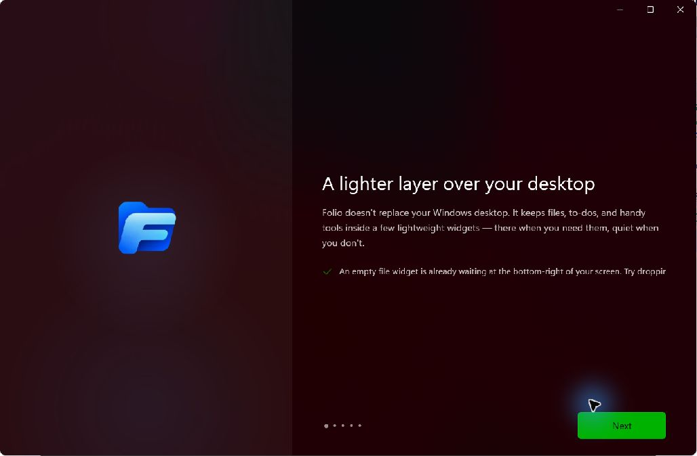
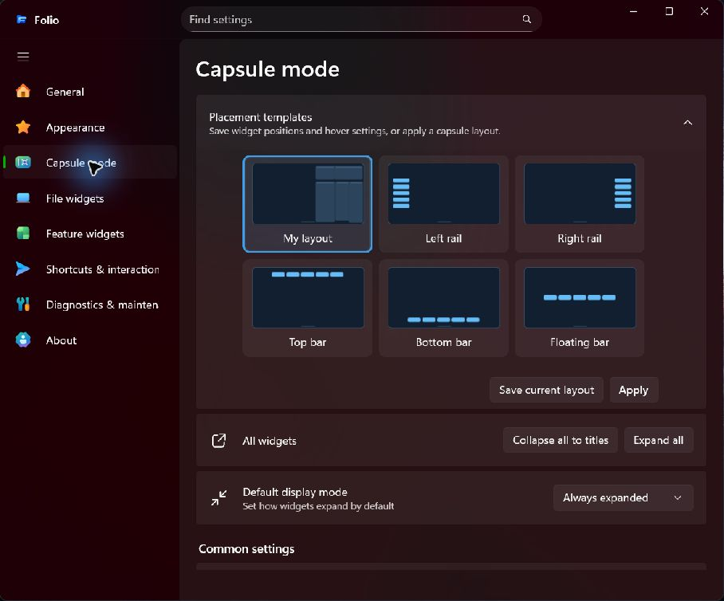

Set up Folio
Install Folio, group a few desktop icons, and save an arrangement for the next time you sign in.
Install and open Folio
- Open the download page and choose the installer for your PC.
- Run Setup and launch Folio.
- Use the Folio icon in the Windows notification area to open Settings or create a widget.

Group desktop icons
Select the icons, open Folio’s tray menu, and choose Group desktop for one widget or Group by type for separate Apps, Files, and Folders widgets.
With the direct installer, the Windows desktop context menu also has Send to → Folio commands. On Windows 11, open Show more options to see Send to.
Drop items into a file widget to make shortcuts. Hold Ctrl and left Alt before dragging one desktop icon onto another to group the pair.
See the widget menus in action
Hide or show grouped originals
Choose Hide originals from the Folio tray menu to hide grouped items using the Windows Hidden attribute. File Explorer also hides them in its normal view. Their files stay at their original paths. Choose Show originals to make them visible again.
Save a layout and collapse widgets
Open Settings → Capsule mode to choose a visual layout template. Save My layout to reuse your current arrangement, or choose Collapse all to titles to keep only widget names in view.

Restore widgets at Windows sign-in
In Settings → General, turn on Launch at startup and turn off Silent startup. Use Displays & widgets to choose where each widget appears.
For fewer background resources, select Resource saver under Performance & resources.